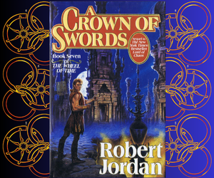

Home Page Shop Characters Glossary
Shop for the Books
Use the links to purchase the books,which can be bought from Amazon. You can also watch the Tv series on Amazon Prime
Buy the Book
The Eye of the World BookThe Eye of the World
When their village is atacked by terrifying creatures, Rand al'Thor and his friends are forced to flee for their lives. An ancient evil is stirring, and its servants are scpuring the land for the Dragon Reborn- the prophesised hero who can deliver the world from the darkness. In this Age of myth and legend, the wheel of Time turn. What was, what may be, and what is, may yet fall under the Shadow.
Buy the Book
The Great Hunt BookThe Great Hunt
The Forsaken are loose, the Horn of Valere has been found and the Dead are risingfrom their dreamless sleep. The propehecies are being fullfilled - but Rand, the shepard the Aes Sedai have proclaimed as the Dragon Reborn, desperately seeks to escape his destiny. Rand cannot run for ever. With every passing day the Dark One grows in strenght and strives to shatter his ancient prison, to break the wheel, to bring an end to Time and sunder the weave of the Pattern.
`Buy the Book
The Dragon RebornThe Dragon Reborn
Shadow lies across the Pattern of the Age,the Dark one has turned all his power against the prison that binds him. If it fails he will escape and nothing will stand in the storm that blows then. save the man that was born to battle the darkness: Rand, the Dragon Reborn. But to wage his war Rand must find Callandor, ancient Sword of the Dragon and the forsaken will shatter the world to thwart him.
`Buy the Book
The Shadow RisingThe Shadow Rising
The Stone of Tear, invulnerable fortress of legend, has fallen. The Children of the Dragon have risen to the call of propheecy and march to the aid of the Light. Callandor, the Sword that is Not a Sword, is held by Rand al'Thor, the man proclaimed as the Dragon Reborn. Still the shadows lenghten and still the Forsaken grow in strength. If he is to fight them, Rand must master the male half of the True Source,a power corrupted by the Dark One, a power that drives men to madness, a power that may save the damn world.
Buy the Book
The Fires of HeavenThe Fires of Heaven
The bonds and the wards that hold the Dark One, are slowly failing but his fragile prison holds. The Forsaken tighten their grip upon the realms of men. Rand al'Thor knows that he must strike at the enemy, but his forces are divided by treachery, and by ambition. Betrayed by his allies, pursued by his enemies and beset by the madness that comes to the male wielders of the One Power, Rand rides out to meet the Foe.
`Buy the Book
Lord of ChaosLord of Chaos
Rand al'Thor, The Dragon Reborn, strives to bind the nations of the world to his will,to forge the alliances that will fight the advance of the Shadow and to ready the forces of the Light for the Last Battle. But there are other powers that seek to command the war against the Dark One. In the White Tower the Amyrlin Elaida sets a snare to trap the Dragon, whilst the rebel Aes Sedai scheme to bring her down. And as the realms of men fall into chaos the immortal Forsaken and the servants of the Dark plan their assault on the Dragon Reborn.
`Buy the Book
A Crown of Swords
A Crown of Swords
Rand al'Thor, the Dragon Reborn, has escaped the snares of the White Tower and the first of the Rebel Aes Sedai have sworn to follow him. Attacked by the servants of the Dark, threatened by the invading Seanchan, Rand rallies his forces and brings battle upon Illian, stronghold of Sammael the Forsaken. In the city of Ebou Dar, Elayne,Aviendha and Mat struggle to secure the ter'angreal that can break the Dark One's hold on the world's weather - and an ancient bane moves to oppose them. In the town of Salidar,Egwene al'Vere gathers an army to reclaim Tar Valon and reunite the Aes Sedai.
Buy the Book
A Path of DaggersThe Path of Daggers
Rand has conquered the city of Illian, struck down Sammael the Forsaken and shattered the armies of the invading Seanchan. Nynaeve, Aviendha and Elayne have broke the Dark One's hold on the world's weather. Egwene al'Vere,leader of the exiled Aes Sedai, marches her army towards the White Tower. Rand and the Asha'man that follow him are slowly being corrupted by the madness that comes to the male weilders of the One Power. If they cannot remove the Dark One's taint from the True Source then none will survive to fight the Last Battle against the Shadow.
Buy the Book
Winter's HeartWinter's Heart
Rand is slowly succumbing to the taint that the Dark One has placed upon saidin, the male half of the True Source. His Asha'man followers are also showing signs of the insanity that once devastated the world and brought the Age of Legends to an end. In the city of Ebou Dar the Seanchan marshal their forces and continue their relentless assault. In Shayol Ghul the Forsaken have joined forces to destroy the Dragon. Rand's only chance is to remove the taint from saidin. To do so he must master a power from the Age of Legends.
`Buy the Book
Crossroads of TwilightCrossroads of Twilight
Fleeing from Ebou Dar with the kidnapped daughter of the Nine Moons,Mat Cauthon learns that he can neither keep her nor let her go,for both the shadow and the might of the Seanchan empire are now indeadly pursuit. At Tar Valon, Egwene lays siege to the White Tower.She must quickly, with as little bloodshed as possible, for unless the Aes Sedai are reunited only the male Asha'man will remain to defend the world against the Dark One. Meanwhile Rand must gamble again- not knowing which of his allies are really enemies
Buy the Book
Knife of DreamsKnife of Dreams
As the very fabric of reality wears thin, all portets indicate that Tarmon Gai'don, the Last Battle, is imminent- and Rand al'Thor must ready himself to confront the Dark One. But Rand must first negitiate a truce with the Seanchan armies, as teir forces increasingl sap at his strength. In Caemlyn Elayne fights to gain the Lion Thronewhile trying to avoid civil war and Egwene finds the White Tower is no longer a safe place.This small company must prevail or the Dark One will triump and the world will be lost.
`Buy the Book
The Gathering StormThe Gathering Storm
Tarmon Gai'don , the last Battle, looms and mannkind is not ready. Rand struggles to unite a fractured network of kingdoms and alliances in preparation for the Last Battle, as his allies watch in terror the shadow that seems to be growing within the heart of the Dragon Reborn himself. Egwene is a captive of the White Towerand subject to the whims of their tyrannical leader. She works to hold together the disparate factions of Aes Sedai, as the days tick toward the Seanchan attack she knows is imminent. Her fight will prove the mettle of the Aes Sedai and the future of the White Tower.
`Buy the Book
Towers of MidnightTowers of Midnight
The Last Battle has started. The seals on the Dak One's prison are crumbling. The Pattern itself is unraveling, and the armies of the Shadow have begun to spill out of the Blight. Perrin is haunted by spectres from his past. To prevail, he must find a way to master the wolf within him or loose himself to it forever. Meanwhile, Mat prepares for the most difficult challenge of his life The Tower of Ghenjei awaits, and its secrets will reveal the fate of a friend long lost. The end Draws near.It's time to roll the dice.
Buy the Book
A Memory of LightA memory of Light
In the field in Merriler the rulers of the nations gather to join behind Rand al'Thor, or to stop him from his plan to break the seals on the Dark One's prison- which may be a sign of his madness, or the last hope of humankind. Egwene, the Amyrlin Seatl, leans toward the former. In Andor the Trollocs seize Caemlyn. In the wolf dream Perrin battles, Slayer. Approaching Ebou Dar, Mat plans to visit his wife, Tuon, now Fortuona, Empress of the Seanchan. All humanity is in peril - and the outcome will be decided in Shayol Ghul itself.
`Price
New SpringNew Spring
Al'Lan Mandragoran, exiled king of Malkier and the finest swordsman of his generation,finds himself in Canluum,a city that is rife with the rumours of Shadowspan.Proof that the Dark One grows powerful once more and his minions are at work throughout the land. Lan will meet a woman that will shape his destiny within Canluum's walls. Moiraine Aes Sedai, who has journied to the city to find a bondsman,to aid her quest to prove the truth of a vague prophecy. One that speaks of a means to turn back the Shadow.
`The Tv Series
The Wheel of Time is an American fantasy television series developed by Rafe Judkins for Amazon Prime Video. The series is based on the book series of the same name by Robert Jordan and Brandon Sanderson. The first season, consisting of eight episodes, premiered on Prime Video on November 19, 2021, with the first three episodes released immediately and the remaining five on a weekly basis after that, culminating in the season finale on December 24, 2021. The series was renewed for a second season in May 2021, before the first season premiered. The second season premiered on September 1, 2023. In July 2022, over a year ahead of the second-season premiere, the series was renewed for a third season.
Watch the Official Trailer Here

Premise
Moiraine Damodred, a member of the Aes Sedai, a powerful organization of women who can channel the One Power, seeks a group of five young people from the secluded village of Emond's Field in the Two Rivers, believing one of them is the reincarnation of the Dragon, an extremely powerful male channeller responsible for the Breaking of the World. The Dragon Reborn is prophesied to either save the world from a primordial evil known as the Dark One or break it once more.
Season One
- Leavetaking
- Shadow's Waiting
- A Place of Safety
- A Place of Safety
- The Dragon Reborn
- Blood Calls Blood
- The Flame of Tar Valon"
- The Dark Along the Ways"
- The Eye of the World"
- A Taste of Solitude
- Strangers and Friends"
- What Might Be
- Daughter of the Night
- Damane
- Eyes Without Pity
- Daes Dae'mar
- What Was Meant to Be"
Season Two
Watch the two full season on Amazon Prime